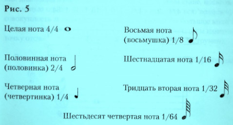
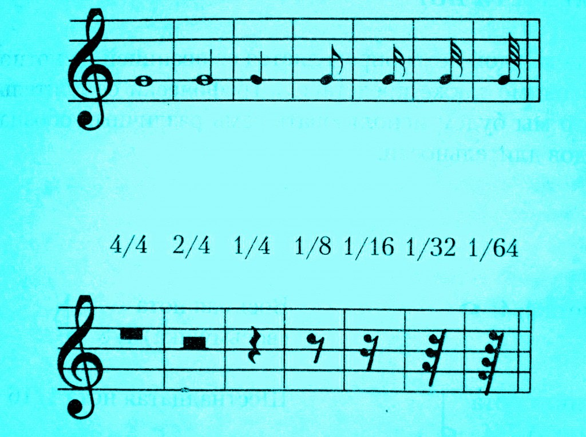

Закрепим материал.
Длительности нот:
Высота каждой ноты определяется ее позицией на нотном стане, необходимо также представить графически ее длительность.Для этого мы будем использовать семь различных обозначений семи видов длительности.

Символы обозначения длительности пауз находятся в соответствии с длительностью нот, приведенных на рис.5.
Символы обозначения длительности пауз находятся в соответствии с длительностью нот, приведенных на рис.5.
Соответствие между нотами и паузами следующее:

наверх